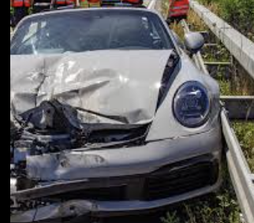

Statt selbst lange nach einem Kfz-Sachverständigen zu suchen, vermitteln wir Ihre Anfrage über unser Partnernetzwerk schnell an einen qualifizierten, unabhängigen Gutachter in Ihrer Nähe – für Unfallgutachten, Schadengutachten und Fahrzeugbewertungen.
Über unser Partnernetzwerk vermitteln wir das komplette Spektrum an KFZ-Gutachten – transparent, schnell und rechtssicher.
Rechtssichere Dokumentation nach Verkehrsunfall – Schadensermittlung, Fotodokumentation und Kostenberechnung für Versicherungen und Gerichte.
Detaillierte Schadensbewertung Ihres Fahrzeugs mit Kostenkalkulation – für Privatpersonen, Werkstätten und Versicherungsgesellschaften.
Marktgerechte Bewertung Ihres Fahrzeugs – ob Kauf, Verkauf, Erbschaft oder Steuernachweis. Neutral und nachvollziehbar kalkuliert.
Lückenlose Fotodokumentation und technische Bestandsaufnahme zur rechtlichen Absicherung – auch bei Mietwagenstreitigkeiten.
Klassiker- und Oldtimerbewertung, Liebhaberwertgutachten sowie steuerlich anerkannte Bewertungen für besondere Fahrzeuge.
Kurzfristige Terminvergabe in Aschaffenburg und Umgebung – auch Vor-Ort-Besichtigung direkt bei Ihnen oder in der Werkstatt möglich.
Beispiele aus der Praxis – dokumentierte Unfallschäden, Karosserieschäden und Totalschäden.
In vier Schritten zum rechtssicheren Gutachten – unkompliziert und transparent.
Anrufen, WhatsApp oder kurze Nachricht – wir melden uns innerhalb von 24 Stunden.
Wir vermitteln Sie an einen passenden, unabhängigen Kfz-Sachverständigen in Ihrer Nähe.
Vollständige Schadenaufnahme mit Fotodokumentation und Messungen durch den Sachverständigen.
Rechtssicheres Gutachten – schnell und für Versicherungen verwertbar.

„Nach einem Unfallschaden war ich auf der Suche nach einem KFZ Gutachter in Aschaffenburg und bin hier genau richtig gewesen. War freundlich, professionell und hat alles schnell und unkompliziert erledigt. Sehr empfehlenswert!"
„Der zuverlässigste KFZ Gutachter und Kfz-Sachverständiger in Aschaffenburg. Bestens beraten bei KFZ-Gutachten vor Ort in Aschaffenburg. Absolut empfehlenswert!"
„Kompetent, freundlich und sehr schnell. Das Gutachten war innerhalb kürzester Zeit fertig und wurde von der Versicherung vollständig akzeptiert. Kann ich nur weiterempfehlen!"
Wir sind persönlich für Sie da – vor Ort in Aschaffenburg und Umgebung.
Mainaschaffer Str. 115
63741 Aschaffenburg